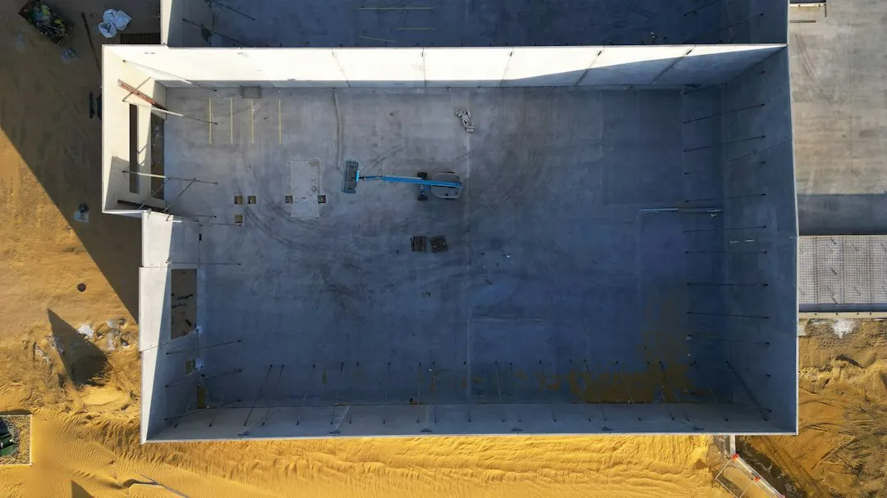

Balcony waterproofing costs cannot be judged fairly without inspecting the area. Price depends on access, removal of old tiles or membrane, and repairs found underneath. Outdoor work may be delayed by wet winter conditions because surfaces need to be dry for membrane application and curing. Before choosing a contractor, compare the treated area, preparation, membrane system, drainage details, curing requirements, testing and completion paperwork in each written quote.
For homeowners comparing balcony waterproofing perth options, the useful starting point is the leak pattern, the balcony construction and the conditions a contractor will need to inspect and repair the area.
Balcony Waterproofing Perth Explained
The guidance published by Waterproofing Perth recommends describing the visible problem before trying to name its cause. Record whether water appears in the room or garage below, whether the balcony holds puddles, and whether you can see staining, loose tiles, flaking paint or dampness near a wall. Water can show up away from the entry point, so the stain identifies an area to investigate rather than proving where the failure is.
Note when the problem appears, particularly after rain, and explain what sits below the balcony. A balcony over a living room raises different inspection questions from one over a garage. Include the suburb, access conditions, recent tiling and any earlier repair work. Photographs of the surface and the affected room can help a contractor understand the starting point.
- Describe the symptom and its location.
- Identify the room or garage below.
- Say whether the work is a repair or part of a renovation.
Build a comparable quote
Quotes are easier to compare when they describe the same work. Ask each contractor to identify the balcony area being treated, the preparation required, and whether old tiles or membrane will be removed. The published guidance says repairs underneath can affect the price, so a confident fixed figure is not fair when the area has not been inspected.
Check whether the scope addresses falls, drainage edges, junctions and penetrations where they apply. Ask which membrane is proposed, how application will be staged, what curing period is required and what paperwork will be supplied at completion. A lower total may reflect different assumptions about preparation or reinstatement rather than a cheaper equivalent job.
If the arrangement is covered by the Home Building Contracts Act, the guidance states that the deposit is capped at 6.5% and later payments are for work completed or materials supplied. Confirm that the contract falls within that category and read the payment schedule before signing.
Plan around Perth weather
Balcony work is affected by exposed outdoor conditions. The published FAQ says wet Perth winter days can delay balconies, retaining walls and external walls because surfaces need to be dry for membrane application and curing. Ask what weather conditions must be met before work starts and how the area will be protected between stages.
Confirm when the balcony can be walked on, tiled or returned to normal use. If the balcony forms part of a renovation, ask when following trades may begin. Indoor bathroom work is less affected by rain, but the same guidance says each coat still needs to cure before tiles are installed. The written scope should make these dependencies clear rather than leaving them to assumption.
- Ask what must remain dry.
- Confirm curing requirements between coats and finishes.
- Check whether weather delays change the proposed sequence.
Decide whether existing work stays
Exposed balconies and walls receive long, hot, dry summers followed by heavy winter rain, according to the published guidance. Sealants, grout and coatings may show deterioration, but their appearance alone does not establish that the concealed membrane has failed.
A membrane does not automatically need recoating because it has reached a particular age. Ask what has failed, where water is entering and whether the existing tiles and membrane remain sound. If removal is proposed, request the reason, the evidence supporting it and the additional work that may be revealed underneath.
Keep the written scope, photographs, product information, test records and completion paperwork together. Where a covered contract is involved, the guidance says defects should be reported in writing within four months of practical completion. Ask how defects are recorded and who receives the notice.
Who this guide applies to
This guide is for Perth homeowners, landlords and renovators dealing with a leaking or exposed balcony, especially where water is appearing below or membrane work forms part of a larger project. It applies across the named Perth service area, including Joondalup, Wanneroo, Rockingham, Baldivis and Mandurah, where the inspection still needs to account for the individual property.
Choose the next question from the condition you can observe:
- Water below: ask how the source will be traced before finishes are removed.
- Planned renovation: ask when membrane work will be applied, cured and checked.
- Outdoor deterioration: ask how rain, heat, drainage and exposure affect the scope.
- Older balcony: ask whether existing materials can remain and what supports replacement.
Send a concise description of the symptom, balcony location, access and project stage. A site assessment can then establish the scope that the quote needs to cover.
- Describe the evidence. Record stains, loose tiles, puddles, dampness and where the balcony sits over the home.
- Send the project details. Include the suburb, access information, visible symptoms and whether the work is a repair or renovation.
- Compare like for like. Check that each quote identifies preparation, removal, membrane work, curing, testing and paperwork.
- Review before signing. Confirm the contract category, deposit, payment stages, defects process and proposed start conditions.
| Setting | Timing issue | Question to ask |
|---|---|---|
| Exposed balcony | Wet surfaces | What must remain dry during application and curing? |
| Balcony over a room or garage | Damage below | How will the source and affected area be inspected? |
| Renovation project | Following trades | When can tiling or other finishes begin? |
Common questions
Can the price be known without inspecting the balcony? Not fairly. The guidance says price depends on the area, access, removal of old tiles or membrane and repairs found underneath.
Can rain delay balcony waterproofing work? Yes. Outdoor membranes need dry surfaces for application and curing, so wet winter days can push the work out.
Does a balcony membrane always need recoating? No. Exposure can affect outdoor surfaces, but age alone does not establish that recoating is required.
What should a balcony quote include? Ask for the treated areas, preparation, membrane, drainage details, curing requirements, testing where relevant and completion paperwork.
What should happen when water appears below a balcony? Describe the visible damage and its location, then ask how the contractor will trace the source before finishes are removed.
This guide covers balcony leak clues, quote comparisons, outdoor timing, membrane questions and contract checks for Perth properties.